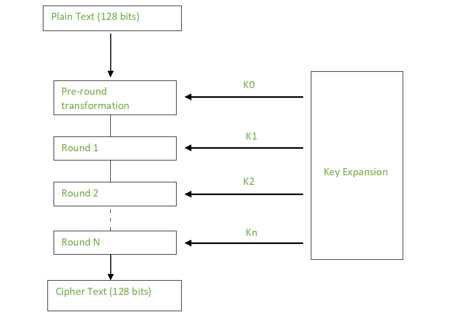
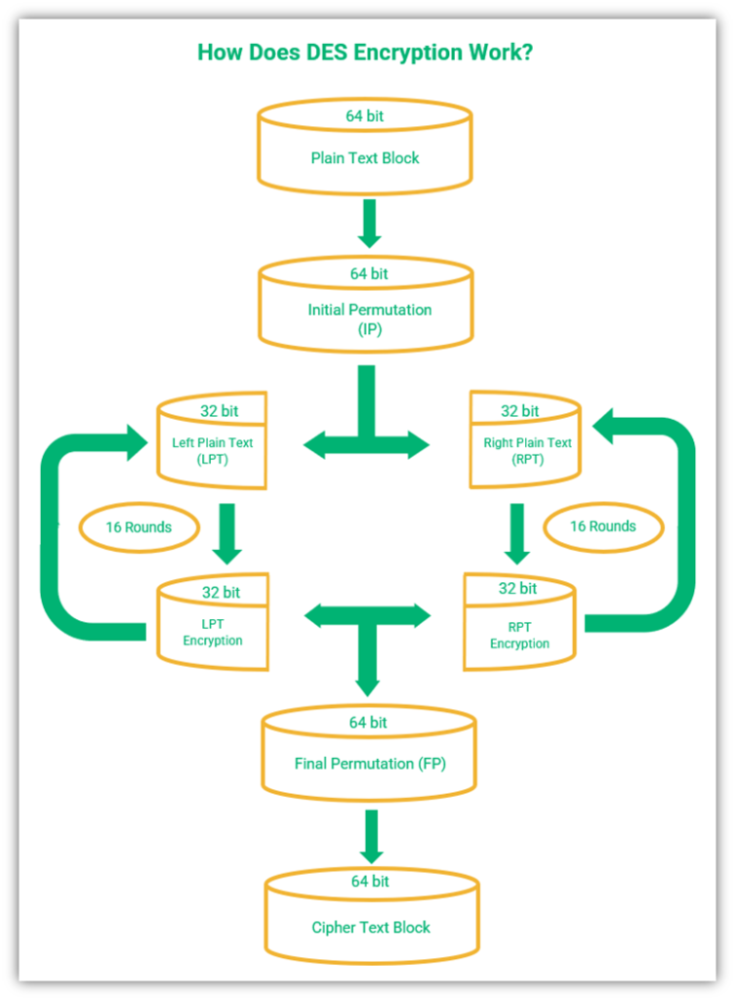

Think of DES as a machine that takes 8 characters of text and a password (key), then scrambles those characters 16 times in a row. Each scrambling round follows the same pattern but uses a different part of the password.
How each round works: The right half is expanded, mixed with a round key, passed through S-boxes (substitution), permuted, and then XORed with the left half. The halves are then swapped.

Figure: Process of generating the 16 round keys from the initial 56-bit key

Figure: Detailed visualization of the DES encryption process
AES treats data as a 4×4 grid of bytes (like a small spreadsheet). It performs four operations on this grid multiple times: substitute bytes (using a lookup table), shift rows (move bytes left), mix columns (math operation), and add round key (mix with key). This process repeats 10-14 times.
Step 1: Start with 4×4 byte grid (State)
The complete round: SubBytes → ShiftRows → MixColumns → AddRoundKey. This is repeated 10 times for a 128-bit key.
Unlike DES and AES which encrypt blocks of data, RC4 creates a stream of random-looking bytes that are combined (XORed) with your message one byte at a time. It's like having a one-time pad that's generated on the fly.
Fill array S with values from 0 to 255 in order:
Use the key to scramble array S:
j = 0
for i = 0 to 255:
j = (j + S[i] + key[i mod key_length]) mod 256
swap S[i] and S[j]
Result: S-box is now thoroughly mixed based on the key
Generate keystream and XOR with plaintext:
i = j = 0
for each byte of plaintext:
i = (i + 1) mod 256
j = (j + S[i]) mod 256
swap S[i] and S[j]
keystream_byte = S[(S[i] + S[j]) mod 256]
ciphertext_byte = plaintext_byte XOR keystream_byte
Plaintext ⊕ Keystream = Ciphertext
Key
KSA
(Scramble S-box)
PRGA
(Generate stream)
XOR
(with plaintext)
| Feature | DES | AES | RC4 |
|---|---|---|---|
| Type | Block cipher | Block cipher | Stream cipher |
| Block Size | 64 bits | 128 bits | N/A (byte by byte) |
| Key Size | 56 bits | 128, 192, or 256 bits | Variable (40-2048 bits) |
| Structure | Feistel network | Substitution-Permutation | Key-scheduling + PRGA |
| Security | Broken (brute force) | Secure | Weak (statistical biases) |
| Speed | Moderate | Fast (hardware support) | Very fast |
Explain the key differences between DES and AES in terms of structure, security, and performance. Why was AES chosen to replace DES?
Describe in detail the four transformations that occur in each round of AES encryption. What is the purpose of each transformation?
Explain the specific weaknesses in RC4 that led to its deprecation. Provide examples of attacks or vulnerabilities.
Describe the Feistel structure used in DES, including how data flows through the rounds. Explain the advantages of this structure and why it was significant in cryptographic design.
Draw a simple Feistel network diagram showing:
Initial 64-bit block
|
+------+------+
| |
Left32 Right32
| |
| +------+
| |
| F-function
| |
| Round Key
| |
+----(+)-----+
|
+------+------+
| |
Right32 New Left32
| |
+------+------+
|
Next Round
Label clearly: input block, left/right halves, F-function, round key, and XOR operation
Compare the security provided by different key sizes (56-bit DES, 128-bit AES, 256-bit AES) against various attack vectors. Include quantitative analysis of brute force resistance and discuss when larger keys are necessary.
| Algorithm | Key Size | Possible Keys | Brute Force Resistance |
|---|---|---|---|
| DES | 56 bits | 256 ≈ 7.2 × 1016 | Breakable in hours with specialized hardware |
| AES-128 | 128 bits | 2128 ≈ 3.4 × 1038 | Infeasible with current technology |
| AES-256 | 256 bits | 2256 ≈ 1.2 × 1077 | Beyond foreseeable future technology |
Security Margin with Classical vs. Quantum Computing
Classical: |----DES(56)----|---------AES-128---------|---------AES-256---------|→
Insecure Secure Very Secure
Quantum: |-------DES(56)-------|-------AES-128-------|-------AES-256-------|→
Trivial Potentially Vulnerable Secure